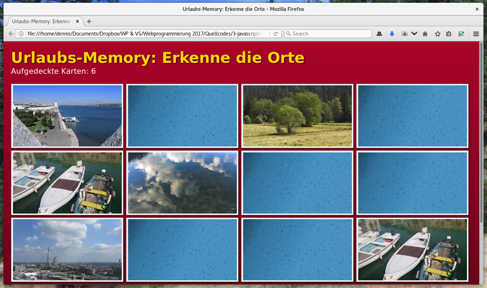
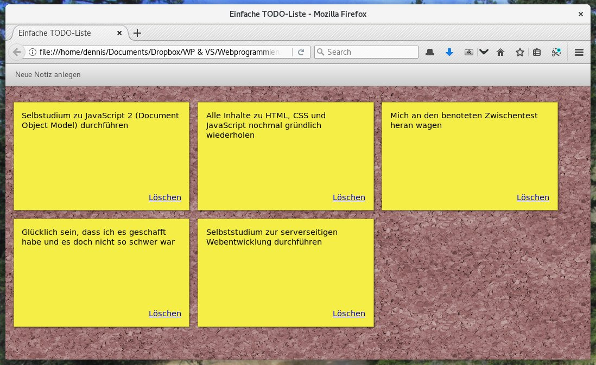

Na, hat dir die letzte Einheit zu JavaScript Lust auf mehr gemacht?
Dann werden dir diese Folien gefallen. Denn hier erfährst du, wie
du JavaScript in deinen HTML-Seiten verwenden kannst.
<!DOCTYPE html>
<html>
<head>
<title>JavaScript und HTML in einer Datei</title>
<meta charset="utf-8" />
<!-- Stylesheet und JavaScript nun in eigenen Dateien -->
<link rel="stylesheet" href="style.css" />
<script src="button-script.js"></script>
</head>
<body>
<button id="klick-mich-button">Klick mich</button>
<div id="ergebnis"></div>
</body>
</html>
Lade dir den Quellcode
zu dieser Aufgabe herunter und schaue dir die HTML-Datei aus dem
Verzeichnis Aufgabe im Browser an. Es handelt sich um ein einfaches
Memoryspiel.
Doch leider läuft das Spiel noch nicht richtig. Wenn man eine Karte anklickt,
passiert noch nichts, obwohl in der Datei script.js in Zeile 67 ein
entsprechender Event Listener registriert wird. Um diesen Fehler zu finden,
solltest du die Funktionen onCardClicked und startGame
debuggen. Der Fehler ist dann ziemlich offensichtlich. üò∞
Wenn das Umdrehen der Karten klappt, wirst du feststellen, dass das Spiel
immer noch nicht läuft. Eigentlich sollte beim Aufklappen der zweiten Karte
geprüft werden, ob die beiden Karten übereinstimmen und nur, wenn das der Fall
ist, sollten die Karten offen liegen bleiben. Stattdessen bleiben die Karten
aber einfach immer offen, auch wenn sie nicht identisch sind. Auch hier wirst
du wohl debuggen m√ºssen. Aber keine Angst, die Korrektur ist ziemlich einfach. üôà

Das sieht noch nicht ganz richtig aus …
Oh je! Wenn du hier schauen musst, hast du die beiden Fehler nicht gefunden. üòî
Na gut, dann wollen wir dir mal weiter helfen:
In Zeile 51 fehlt ein s. Es muss "#cards > img" statt
"#card > img" heißen.
Die Aufrufe in den Zeilen 103 und 104 sind vertauscht. Es muss erst die
Funktion flipCard(card)
aufgerufen werden, um die angeklickte Karte umzudrehen. Erst dann können
die Karten mit compareCards(card)
verglichen werden.
Zugriff auf vorhandene HTML-Elemente
Auf HTML-Elemente wird über das Document Object Model zugegriffen.
Das document-Objekt dient hierfür als zentraler Einstiegspunkt.
let mainContentElement = document.getElementById("main-content");
Gibt ein einzelnes HTML-Element mit der gesuchten ID (Attribut id) zurück. Gibt es kein
solches Element, ist die Antwort stattdessen null.
let firstImage = document.querySelector("main > img:first-child");
Führt den übergebenen CSS-Selektor aus und gibt das erste HTML-Element zurück, auf das die Suche zutrifft.
Wurde kein passendes Element gefunden, ist die Antwort ebenfalls null.
<!DOCTYPE html>
<html>
<head>
<meta charset="utf-8" />
<title>Einzelne DOM-Elemente auslesen</title>
</head>
<body>
<h1>Einzelne DOM-Elemente auslesen</h1>
<p id="hinweis">
Klicke einen der beiden Knöpfe.
</p>
<button onclick="getElementByIdClicked()">Element mit ID „hinweis”</button>
<button onclick="querySelectorClicked1()">Das erste <h1></button>
<button onclick="querySelectorClicked2()">Das erste <h2></button>
<script>
getElementByIdClicked = () => {
let hinweis = document.getElementById("hinweis");
alert(hinweis.outerHTML);
}
querySelectorClicked1 = () => {
let heading = document.querySelector("h1")
alert(heading.outerHTML);
}
querySelectorClicked2 = () => {
let heading = document.querySelector("h2")
// heading ist null !!
alert(heading);
}
</script>
</body>
</html>
let containerElements = document.getElementsByClassName("container");
Liefert eine Liste aller HTML-Elemente, denen die Klasse container zugewiesen wurde.
let allThumbnails = document.querySelectorAll("img.thumbnail");
Liefert alle <img>-Elemente, die gleichzeitig noch die
Klasse thumbnail besitzen. Die Syntax für den Abfrageparameter ist dieselbe wie für
CSS-Selektoren.
let firstThumbnail = allThumbnails[0]; allThumbnails.forEach(element => …);
Auch wenn man es zunächst denken würde, aber das Ergebnis der Methoden getElementsByClassName
und querySelectorAll ist kein Array. getElementsByClassName liefert eine
HTMLCollection und querySelectorAll ein NodeList-Objekt. Beide
verhalten sich ähnlich wie Arrays, besitzen aber nicht ganz dieselben Methoden. Die forEach-Methode
zum Beispiel funktioniert nur beim Ergebnis von querySelectorAll. üòï
<!DOCTYPE html>
<html>
<head>
<meta charset="utf-8" />
<title>Einzelne DOM-Elemente auslesen</title>
</head>
<body>
<h1>Mehrere DOM-Elemente auslesen</h1>
<ol>
<li class="erledigt">
Einführung in die Vorlesung
</li>
<li class="erledigt">
Grundlagen des Web
</li>
<li class="erledigt">
Einstieg in HTML
</li>
<li class="in-arbeit">
Layouts erstellen mit CSS
</li>
<li class="in-arbeit">
Responsive Webdesign
</li>
</ol>
<button onclick="getElementsByClassNameClicked()">Alle mit Klasse „erledigt”</button>
<button onclick="querySelectorAllClicked1()">Alle li.in-arbeit</button>
<button onclick="querySelectorAllClicked2()">Alle li.nicht-in-arbeit</button>
<script>
getElementsByClassNameClicked = () => {
let result = document.getElementsByClassName("erledigt");
showResult(result);
}
querySelectorAllClicked1 = () => {
let result = document.querySelectorAll("li.in-arbeit");
showResult(result);
}
querySelectorAllClicked2 = () => {
let result = document.querySelectorAll("li.nicht-in-arbeit");
showResult(result);
}
showResult = domNodes => {
console.log(domNodes);
let text = `Anzahl gefunden: ${domNodes.length}\n\n`;
for (let i = 0; i < domNodes.length; i++) {
text += domNodes.item(i).outerHTML + "\n\n";
}
alert(text)
}
</script>
</body>
</html>
Jedes HTML-Element kann eine Reihe von Ereignissen auslösen, auf die man mit JavaScript
reagieren kann. Hierfür besitzt jedes Element die Methode addEventListener.
Der erste Parameter ist der Name des Ereignisses, der zweite Parameter eine Funktion, die
bei Eintreten des Ereignisses aufgerufen wird.
üéì Merke: Funktionen sind vollwertige Objekte und k√∂nnen daher direkt als Parameter
übergeben werden.
üéì Achtung: Da JavaScript den gesamten Code in einem einzigen Thread ausf√ºhrt, d√ºrfen
die Event-Handler-Funktionen nicht lange laufen. Sonst wird die gesamte Seite ruckelig, weil
im selben Thread auch die Bildschirmausgabe erzeugt wird. ⏳
Ereignis
Bedeutung
click
Einfacher Linksklick mit der Maus oder dem Touchscreen
mouseover
Der Mauszeiger befindet sich innerhalb des Elements.
mouseout
Der Mauszeiger befindet sich nicht mehr über dem Element.
keydown
Beginn eines Tastendrucks auf der Tastatur. Die Taste wurde herunter gedrückt.
keyup
Ende eines Tastendrucks auf der Tastatur. Die Taste wurde wieder losgelassen.
Eine gute Übersicht gibt es im
Mozilla Developer Network. Da der Browser aber keine komplexen Gesten erkenn kann (Swipe Left,
Double Tap, …) muss man hierfür externe Bibliotheken wie
Hammer.JS verwenden.
Jeder Event Listener bekommt als ersten Parameter ein Event-Objekt übergeben.
In event.target findet sich dann zum Beispiel
das HTML-Element, das das Ereignis ausgelöst hat. Es gibt aber noch weitere, interessante
Methoden, die gelegentlich nützlich sein können.
window.addEventListener("load", …)
Ein besonders häufig genutztes Ereignis ist das load-Ereignis des window-Objekts.
Es zeigt an, dass die HTML-Seite komplett geladen wurde und nun auf das Document Object Model zugegriffen
werden kann. Denn der Quellcode aller <script>-Elemente wird
sofort ausgeführt, sobald der Browser sie findet. In der Regel ist die Seite zu diesem Zeitpunkt aber
noch gar nicht komplett geladen und Zugriffe auf das Document Object Model schlagen fehl.¹
Will man daher beim Laden der Seite zuverlässig auf das Document Object Model zugreifen, muss man erst
das load-Ereignis abwarten und in dessen Event Handler alle weiteren Schritte ausführen.
¹ Man nennt das eine „Race Condition”, da der JavaScript-Code mit dem Browser um die Wette läuft.
üèÉüèÉ
<!DOCTYPE html>
<html>
<head>
<meta charset="utf-8" />
<title>Auf Ereignisse reagieren</title>
<style>
#preview {
display: block;
width: 25em;
padding: 0.25em;
background: #F0F0F0;
border: 1px solid #A0A0A0;
margin-bottom: 1em;
}
</style>
</head>
<body>
<h1>Auf Ereignisse reagieren</h1>
<img id="preview" />
<button id="next-button">Weiter</button>
<button id="prev-button">Zurück</button>
<script>
window.addEventListener("load", () => {
let previewElement = document.getElementById("preview");
let nextButton = document.getElementById("next-button");
let prevButton = document.getElementById("prev-button");
let images = [
"img/preview1.jpg",
"img/preview2.jpg",
"img/preview3.jpg"
];
let index = -1;
switchImage = direction => {
index += direction;
if (index >= images.length) index = 0;
if (index < 0) index = images.length - 1;
previewElement.src = images[index];
}
switchImage(1);
nextButton.addEventListener("click", () => switchImage(1));
prevButton.addEventListener("click", () => switchImage(-1));
});
</script>
</body>
</html>
// Der Event Handler für das load-Event wird erst ausgeführt, wenn die
// Seite geladen und der DOM-Baum komplett verfügbar ist.
window.addEventListener("load", () => {
// Lokale Variablen mit den HTML-Elementen der Seite
let buttonPlusOne = document.getElementById("button-plus-one");
let buttonMinusOne = document.getElementById("button-minus-one");
let buttonStartStop = document.getElementById("button-start-stop");
let statusElement = document.getElementById("status");
let counterElement = document.getElementById("counter");
// Aktueller Zählerstand
let counter = 0;
let running = false;
let lastUpdate = 0;
// Event Handler für den +1 Button
buttonPlusOne.addEventListener("click", () => {
counter++;
});
// Event Handler für den -1 Button
buttonMinusOne.addEventListener("click", () => {
if (counter > 0) {
counter--;
}
});
// Event Handler für den Start/Stop-Button
buttonStartStop.addEventListener("click", () => {
running = !running;
if (running) lastUpdate = Date.now();
});
// Funktion, die kontinuierlich die Anzeige aktualisiert
// und jede Sekunde den Zähler runterzählt, wenn die Stoppuhr läuft
let updateDisplay = () => {
// Jede Sekunde den Zähler runterzählen
let now = Date.now();
if (now - lastUpdate >= 1000) {
lastUpdate = now;
if (running && counter > 0) {
counter--;
} else {
running = false;
}
}
// Aktuellen Status der Stoppuhr anzeigen
counterElement.textContent = counter;
if (running) {
statusElement.textContent = "Uhr läuft …";
} else {
statusElement.textContent = "Gestoppt";
}
// Sicherstellen, dass die Funktion kontinuierlich aufgerufen wird
window.requestAnimationFrame(updateDisplay);
};
window.requestAnimationFrame(updateDisplay);
});
Änderungen an der DOM-Struktur vornehmen
Die Struktur des Document Object Model kann jederzeit verändert werden.
Der Browser stellt die Änderungen sofort auf dem Bildschirm dar.
Jedes HTML-Element besitzt in JavaScript das Attribut style zur direkten
Beeinflussung seiner Darstellung. Das style-Attribut besitzt für jede
CSS-Anweisung ein Unterelement, mit dem Wert der entsprechenden Anweisung ausgelesen
oder überschrieben werden kann.
CSS-Anweisungen, die im Stylesheet mit Bindestrich geschrieben werden (zum Beispiel
font-size), werden in JavaScript zusammen als „Camel Case„ geschrieben
(also fontSize).
alertElement.classList.add("visible"); alertElement.classList.remove("warning"); if (alertElement.classList.contains("fade-in")) { … }
Nicht nur innerhalb des HTML-Codes können jedem Element beliebig viele Klasse zugeordnet
werden (über das class-Attribut, zum Beispiel so:
<div class="container blue-background").
Dasselbe geht auch über das classList-Attribut in JavaScript. Es handelt
sich dabei um ein Objekt mit den oben gezeigten Methoden, um weitere Klassen hinzuzufügen,
zu entfernen oder zu prüfen, ob sie vorhanden sind.
Im Zusammenhang mit einem guten CSS-Stylesheet ist diese Variante der direkten Manipulation
des style-Attributs vorzuziehen. Denn nach jeder Änderung der classList
wertet der Browser die Stylesheets neu aus und macht sich ergebende Änderungen an der Darstellung
sofort sichtbar. Auf wunsch sogar animiert, wenn das Stylesheet die transition-
oder animation-Anweisung enthält.
<!DOCTYPE html>
<html>
<head>
<meta charset="utf-8" />
<title>Aussehen verändern mit JavaScript</title>
<style>
img {
display: block;
width: 24em;
transition: width 0.5s;
padding: 0.25em;
background: #F0F0F0;
border: 1px solid #A0A0A0;
margin-bottom: 1em;
}
body {
transition: background-color 0.5s, color 0.5s;
}
body.dark {
background: black;
color: white;
}
body.dark img {
background: #A0A0A0;
border-color: white;
}
</style>
</head>
<body>
<h1>Aussehen verändern mit JavaScript</h1>
<img src="img/preview1.jpg" />
<button onclick="resizeImage(2)">Größer</button>
<button onclick="resizeImage(-2)">Kleiner</button>
<button onclick="toggleBackground(event)">Licht aus!</button>
<script>
// Am Anfang ist das Bild laut Stylesheet 24em breit
let width = 24;
// Funktion zum Vergrößern oder Verkleinern des Bilds
let resizeImage = delta => {
width += delta;
width = Math.max(width, 10);
let imageElement = document.querySelector("img");
imageElement.style.width = width + "em";
};
// Funktion zum Umschalten des Hintergrunds
let toggleBackground = event => {
let bodyElement = document.querySelector("body");
if (bodyElement.classList.contains("dark")) {
bodyElement.classList.remove("dark");
event.target.textContent = "Licht aus!";
} else {
bodyElement.classList.add("dark");
event.target.textContent = "Licht an!";
}
};
</script>
</body>
</html>
alertElement.innerHTML = "<b>Wichtige Frage:</b> Kennen Sie schon unsere Sparangebote?"
Die einfachste Art, den Inhalt eines Elements zu verändern, ist seinem innerHTML-Attribut
einen neuen Wert zuzuweisen. Dadurch wird der Inhalt des Elements so verändert, als stünde der neue
Wert innerhalb des Elements direkt im HTML-Code. Auf diese Weise können daher auch weitere HTML-Elemente
in die Seite eingefügt werden.
Aus Sicherheitsgründen sollte man aber aufpassen, wie sich der neue Wert für innerHTML
zusammensetzt. Werden dabei Inhalte von nicht vertrauenswürdigen Quellen zugelassen (zum Beispiel
Benutzereingaben), kann dies eine
DOM-based Cross Site Scripting-L√ºcke verursachen. üòî
alertElement.textContent = "Bitte akzeptieren Sie erst die AGBs.";
Bist du dir sicher, dass der neue Inhalt eines Elements keine HTML-Anweisungen beinhalten darf, solltest
du anstelle von innerHTML das textContent-Attribut verwenden. Denn hier werden
alle spitzen Klammern als Text interpretiert und genau so auf der Seite angezeigt. Die Gefahr für
Sicherheitslücken ist dadurch deutlich geringer.
<!DOCTYPE html>
<html>
<head>
<meta charset="utf-8" />
<title>Inhalte verändern mit JavaScript</title>
<style>
#preview {
display: inline-block;
margin-bottom: 1em;
border: 1px solid black;
padding: 0.25em;
background: #303030;
color: #87AE87;
}
</style>
</head>
<body>
<h1>Inhalte verändern mit JavaScript</h1>
<div id="preview"></div>
<br />
<button onclick="setInnerHtml()">innerHTML setzen</button>
<button onclick="setTextContent()">textContent setzen</button>
<button onclick="clearPreview()">Vorschau zurücksetzen</button>
<script>
let previewElement = document.getElementById("preview");
let newContent = "<ol>\n"
+ " <li>Asterix der Galier</li>"
+ " <li>Asterix und Kleopatra</li>"
+ " <li>Asterix erobert Rom</li>"
+ " <li>Asterix - Sieg über Cäsar</li>"
+ " <li>Asterix bei den Briten</li>"
+ " <li>Asterix - Operation Hinkelstein</li>"
+ " <li>Asterix in Amerika</li>"
+ " <li>Asterix und die Wikinger</li>"
+ " <li>Asterix im Land der Götter</li>"
+ "</ol>\n";
let setInnerHtml = () => previewElement.innerHTML = newContent;
let setTextContent = () => previewElement.textContent = newContent;
let clearPreview = () => previewElement.innerHTML = "";
</script>
</body>
</html>
let pElement = document.createElement("p"); let pContent = document.createTextNode("Es war einmal vor langer, langer Zeit …");
Auf hoch offiziellem Wege, ohne dabei die Attribute innerHTML und textContent
zu benutzen, neue Elemente erzeugen kannst du mit diesen beiden Methoden. Sie erzeugen ein neues HTML-Element
bzw. einen Textknoten (enthält nur Text ohne HTML-Code), die du in das Document Object Model einfügen kannst,
um sie anzuzeigen.
pElement.appendChild(pContent);
Jedes Element besitzt daher die Methode appendChild, mit der ihm weitere Unterelemente
hinzugefügt werden können. Handelt es sich dabei um bereits vorhandene Elemente, die schon im Dokument
vorhanden sind, müssen sie erst aus dem Dokument entfernt werden, bevor sie neu eingefügt werden können.
let pElement = pContent.parentNode;
Über das Attribut parentNode kommt man immer von einem Element zu seinem übergeordneten Elternelement.
Und hier siehst du, wie du auf die Kindelemente eines HTML-Elements zugreifen kannst. Hier gilt
wieder, dass es sich bei childNodes um ein NodeList-Objekt und nicht
um ein vollwertiges Array handelt.
pElement.removeChild(pContent);
Und last but not least, haben wir hier ein wunderschönes Exemplar der removeChild-Methode.
Wie der Name bereits sagt, wird damit ein Element aus der DOM-Struktur entfernt. Dementsprechend
verschwindet es dann auch vom Bildschirm und kann bei Bedarf an anderer Stelle wieder eingefügt werden.
Kennst du nur das Element selbst, dass du entfernen willst (hier pElement), kannst du es über
folgendem Umweg entfernen:
pElemenet.parentNode.removeChild(pElement);
<!DOCTYPE html>
<html>
<head>
<meta charset="utf-8" />
<title>Die DOM-Objektstruktur bearbeiten</title>
<style>
#preview > div {
display: inline-block;
border: 1px solid #A0A0A0;
background: #F0F0F0;
padding: 0.3em;
box-shadow: 2px 2px 4px rgba(0,0,0,0.4);
margin-right: 1em;
margin-bottom: 1em;
}
#preview > div:last-child {
margin-right: 0;
}
#preview > div > img {
display: block;
}
</style>
</head>
<body>
<h1>Die DOM-Objektstruktur bearbeiten</h1>
<div id="preview"></div>
<div id="html-code"></div>
<br />
<button onclick="createContent()">Inhalt generieren</button>
<button onclick="removeContent()">Inhalt verwerfen</button>
<script>
let previewElement = document.getElementById("preview");
let htmlCodeElement = document.getElementById("html-code");
let images = [
{src: "img/preview1.jpg", text: "Küste in Egmont, British Columbia"},
{src: "img/preview2.jpg", text: "Boote an der Küste Egmonts"},
{src: "img/preview3.jpg", text: "Kajaks auf dem Skookumchuk in Egmont"},
];
// Funktion zum Generieren der Inhalte
let createContent = () => {
// Alten Inhalt entfernen
removeContent();
// Bilder mit Beschreibung einfügen
images.forEach(image => {
let divElement = document.createElement("div");
previewElement.appendChild(divElement);
let imgElement = document.createElement("img");
imgElement.src = image.src;
divElement.appendChild(imgElement);
let txtNode = document.createTextNode(image.text);
divElement.appendChild(txtNode);
});
// Generierten HTML-Code anzeigen
htmlCodeElement.innerHTML = "Erzeugter HTML-Code:<br />";
let preElement = document.createElement("pre");
htmlCodeElement.appendChild(preElement);
let textNode = document.createTextNode(previewElement.innerHTML);
preElement.appendChild(textNode);
};
// Funktion zum Entfernen der Inhalte
let removeContent = () => {
previewElement.innerHTML = "";
htmlCodeElement.innerHTML = "";
};
</script>
</body>
</html>
Der Haushund (Canis lupus familiaris) ist ein Haustier und wird als Heim- und Nutztier gehalten. Seine wilde Stammform ist der Wolf, dem er als Unterart zugeordnet wird. Wann die Domestizierung stattfand, ist umstritten; wissenschaftliche Schätzungen variieren zwischen 15.000 und 100.000 Jahren vor unserer Zeit.
Im engeren Sinn bezeichnet man als Haushund die Hunde, die überwiegend im Haus gehalten werden, und kennzeichnet damit also eine Haltungsform. Historisch wurde ein Hund, der zur Bewachung des Hauses gehalten wird, als Haushund bezeichnet. Eine weitere Verwendung des Begriffs ist die Einschränkung auf sozialisierte (Haus-)Hunde, also Hunde, die an das Zusammenleben mit Menschen in der menschlichen Gesellschaft gewöhnt und an dieses angepasst sind. Damit wird der Haushund abgegrenzt gegen wild lebende, verwilderte oder streunende Hunde, die zwar auch domestiziert, aber nicht sozialisiert sind.
Der Dingo ist ebenfalls ein Haushund, wird jedoch provisorisch als eigenständige Unterart des Wolfes geführt.
Zu den kleinsten anerkannten Hunderassen gehört der Chihuahua (FCI-Nr. 218) mit einem Gewicht von 0,5 bis 3,0 kg und einer Widerristhöhe von unter 20 cm; zu den größten Hunderassen zählen die Deutsche Dogge (FCI-Nr. 235) mit einer Widerristhöhe von mindestens 80 cm bei Rüden und der Irish Wolfhound (FCI-Nr. 160) mit bis zu 95 cm. Zu den seltenen Rassen zählt der Curly Coated Retriever oder auch der aus chinesischer Abstammung hervorgehende und seit mehr als 2000 Jahren dokumentierte Shar Pei.
Die richtige Ernährung ist wichtig
Hunde sind, wie Wölfe, in der Lage, ihre Ernährung in Grenzen an das Nahrungsangebot anzupassen. Schon Wölfe ernähren sich nicht ausschließlich von Beutetieren (wobei diese, weitgehend vollständig gefressen, bereits pflanzliche Nährstoffe enthalten), sondern fressen – je nach Futterangebot – auch pflanzliche Nahrung wie Wurzeln, Blätter, Gräser oder Früchte. Im Verlaufe seines Zusammenlebens mit dem Menschen hat sich der Hund zunehmend an dessen Ernährung angepasst und wurde zum Allesfresser. Fleisch als alleiniges Futtermittel für Hunde ist daher unangemessen.
Eine vollwertige Ernährung der Hunde erfolgt am einfachsten mit qualitativ hochwertigem (industriell gefertigtem) Hundefutter. Diese Fütterung versorgt die Tiere mit allen essentiellen Nahrungsbestandteilen. Manche Hundehalter praktizieren eine Hundeernährung mit spezieller Frischkost (BARF). Ernährungsphysiologisch fragwürdig ist die Ernährung mit Speiseresten, da sie Mangelzustände bewirken kann.
Viele menschliche Nahrungs- und Genussmittel sind für Hunde mehr oder wenig giftig, so zum Beispiel Schokolade aufgrund des enthaltenen Theobromins, aber auch Speisezwiebeln, Weintrauben und Rosinen.
/**
* Hier werden nach dem Laden der Seite alle .tab-items gesucht und mit Event
* Handlern zum Umschalten der Tabreiter versehen. Außerdem wird der erste
* aktive Tabreiter (gekennzeichnet durch .active) angezeigt.
*/
window.addEventListener("load", () => {
// Funktion zum Umschalten der Tabreiter
let switchTabPage = (clickedTabItem) => {
// Erst mal alle Tabseiten ausblenden
clickedTabItem.parentNode.childNodes.forEach(tabItem => {
if (tabItem.nodeType != Node.ELEMENT_NODE) return;
tabItem.classList.remove("active");
let tabContent = document.querySelector(tabItem.dataset.tabContent);
if (tabContent != null) {
tabContent.classList.add("tab-page");
}
});
// Dann die ausgewählte Tabseite anzeigen
clickedTabItem.classList.add("active");
let tabContent = document.querySelector(clickedTabItem.dataset.tabContent);
if (tabContent != null) {
tabContent.classList.remove("tab-page");
}
}
// Alle Tablaschen in der Seite suchen
let tabItems = document.querySelectorAll(".tab-item");
// Event Handler registrieren und erste Tabseite anzeigen
tabItems.forEach(tabItem => {
// Bist du eine aktive Tablasche? Dann Inhalt anzeigen.
if (tabItem.classList.contains("active")) {
switchTabPage(tabItem);
}
// Aktive Seite bei Klick auf die Lasche wechseln
tabItem.addEventListener("click", event => {
switchTabPage(event.target);
});
});
});
<!DOCTYPE html>
<html>
<head>
<meta charset="utf-8" />
<title>Formulareingaben überprüfen</title>
<link rel="stylesheet" href="style.css" />
<script src="script.js"></script>
</head>
<body>
<h1>Kontaktformular</h1>
<form
onsubmit = "validateForm(event)"
action = "contact-form.php"
method = "POST"
>
<!-- Vorname und Nachname -->
<label for="firstname">
Ihr Name:
<span class="required">*</span>
</label>
<div class="side-by-side">
<input name="firstname" type="text" placeholder="Vorname" />
<input name="lastname" type="text" placeholder="Nachname" />
</div>
<!-- E-Mailadresse -->
<label for="email">
E-Mail:
<span class="required">*</span>
</label>
<input name="email" type="email" />
<!-- Auswahlliste für den Betreff -->
<label for="subject">
Betreff:
</label>
<select name="subject">
<option selected="selected">Allgemeine Anfrage</option>
<option>Angebot aus der Werbung</option>
<option>Kooperation und Partnerschaft</option>
</select>
<!-- Die Nachricht -->
<label for="message">
Ihre Nachricht:
<span class="required">*</span>
</label>
<textarea name="message"></textarea>
<!-- Button zum Abschicken des Formulars -->
<input type="submit" value="Abschicken" />
</form>
<!-- Hier wird das Ergebnis der Prüfung angezeigt -->
<div id="result"></div>
</body>
</html>
/*
* Allgemeine Angaben
*/
@import url('https://fonts.googleapis.com/css?family=Quicksand');
html {
font-family: 'Quicksand', sans-serif;
font-size: 12pt;
}
/*
* Basis-Layout des Formulars
*/
form {
max-width: 30em;
border: 1px solid #d0d0d0;
background: #f0f0f0;
padding: 1em;
}
form > *,
form > .side-by-side > * {
display: block;
box-sizing: border-box;
width: 100%;
}
form > .side-by-side {
display: flex;
}
form > .side-by-side > * {
margin-right: 0.25em;
}
form > .side-by-side > *:last-child {
margin-right: 0;
}
/*
* Gestaltung der Feldbezeichner
*/
form label {
font-weight: bold;
margin-top: 1em;
}
form label:first-child {
margin-top: 0;
}
form label .required {
color: darkred;
}
/*
* Gestaltung der Formularfelder
*/
input,
textarea,
select {
border: 1px solid #bebebe;
padding: 0.5em;
margin: 0;
outline: none;
}
textarea {
height: 12em;
}
/*
* Der Button zum Abschicken des Formulars
*/
input[type="submit"] {
margin-top: 2em;
width: auto;
background-color: #0958A7;
color: white;
font-weight: bold;
transition: background-color 0.2s;
}
input[type="submit"]:hover {
background-color: #2868A8;
}
/*
* Element mit dem Prüfergebnis
*/
#result {
margin-top: 1em;
color: red;
}
#result.okay {
color: darkgreen;
}
/**
* Funktion zur Überprüfung des Kontaktformulars. Wird beim Abschicken des
* Formulars aufgerufen.
*/
let validateForm = event => {
// Variablen für das Prüfergebnis
let form = event.target;
let okay = true;
let message = "";
// Vorname muss vorhanden sein
if (form.firstname.value == "") {
okay = false;
message += "Geben Sie bitte Ihren Vornamen ein. <br />";
}
// Nachname muss vorhanden sein
if (form.lastname.value == "") {
okay = false;
message += "Geben Sie bitte Ihren Nachnamen ein. <br />";
}
// E-Mail muss vorhanden sein und zusätzlich ein @ enthalten
// HINWEIS: Besser wäre es, die E-Mailadresse mit einem regulären
// Ausdruck zu prüfen. Einfach mal nach „E-Mail Regex” googlen …
if (form.email.value == "" || !form.email.value.includes("@")) {
okay = false;
message += "Geben Sie bitte eine gültige E-Mailadresse ein. <br />";
}
// Eine Nachricht muss vorhanden sein
if (form.message.value == "") {
okay = false;
message += "Geben Sie bitte eine Nachricht ein. <br />";
}
// Ergebnis anzeigen
let resultElement = document.getElementById("result");
if (okay) {
message = "Vielen Dank für Ihre Nachricht!";
resultElement.classList.add("okay");
} else {
resultElement.classList.remove("okay");
}
resultElement.innerHTML = message;
// Formular nicht abschicken
//if (!okay) {
event.preventDefault();
//}
}
Aufgabe 2: Ein kleines DOM-Quiz
HTML-Elemente auslesen
a) Welche Methode liefert alle Elemente mit derselben Klasse?
document.getElementsByName("…")
document.getElementsByClassName("…")
document.getElementById("…")
b) Welche Methoden liefern das Element mit der ID „toolbar” zurück?
document.getElementById("toolbar")
document.querySelector("toolbar")
document.querySelector("#toolbar")
document.querySelectorAll("toolbar")
document.querySelectorAll("#toolbar")
c) Was liefert die Methode document.getElementById
als Ergebnis, wenn das gesuchte Element nicht gefunden wurde?
false
undefined
null
d) Was liefert die Methode document.querySelectorAll
als Ergebnis, wenn die gesuchten Elemente nicht gefunden wurden?
Nichts
Eine leere Menge mit 0 Einträgen
Den Wert false
Die Zahl 0
Inhalte verändern und erzeugen
a) Wie kann die CSS-Eigenschaft „border-bottom-width” eines HTML-Elements mit
JavaScript verändert werden?
element.style.set("border-bottom-widht", "1px")
element.style.border-bottom-width = "1px"
element.style.border_bottom_width = "1px"
element.style.borderBottomWidth = "1px"
element.style["borderBottomWidth"] = "1px"
b) Wie kann einem HTML-Element die Klasse „invisible” hinzugefügt werden?
document.classListAdd("invisible")
element.classList.add("invisible")
element.classList.invisible = true
element.styleList.add("invisible")
element.style.invisible = true
c) Was passiert, wenn man dem Attribut innerHTML einen String mit
Text und HTML-Elementen übergibgt?
Der Text wird genau so angezeigt, wie er übergeben wurde. Die sptizen Klammern
werden auf dem Bildschirm angezeigt.
Der Text wird genau so angezeigt, wie er übergeben wurde, jedoch werden alle
spitzen Klammern entfernt.
Der Text wird als HTML-Code interpretiert. Auf dem Bildschirm sieht man daher
das Ergebnis der HTML-Elemente. Ganz so, als wären sie von Anfang an im Quellcode
der Seite gestanden.
d) Was passiert, wenn man dem Attribut textContent einen String mit
Text und HTML-Elementen übergibgt?
Der Text wird genau so angezeigt, wie er übergeben wurde. Die sptizen Klammern
werden auf dem Bildschirm angezeigt.
Der Text wird genau so angezeigt, wie er übergeben wurde, jedoch werden alle
spitzen Klammern entfernt.
Der Text wird als HTML-Code interpretiert. Auf dem Bildschirm sieht man daher
das Ergebnis der HTML-Elemente. Ganz so, als wären sie von Anfang an im Quellcode
der Seite gestanden.
Arbeiten mit DOM-Struktur
a) Mit welchem Attribut kann auf das Elternelement eines HTML-Elements zugegriffen werden?
element.p
element.parent
element.parentNode
element.parentNodes
b) Wie kann ein Element aus dem DOM-Baum entfernt werden?
element.remove()
element.discard()
element.parentNode.removeChild()
element.parentNode.removeChild(element)
c) Welcher Aufruf erzeugt ein neues <div>-Element?
document.createElement("div")
document.createElement("<div>")
document.createHtml("<div>")
document.createTextNode("div")
d) Welcher Aufruf fügt ein neues Element in den DOM-Baum ein?
document.insert(element)
document.append(element)
element1.insertChild(element1, element2)
element1.appendChild(element2)
Lösung: 1, 1+3, 3, 2 und 4+5, 2, 3, 1 und 3, 4, 1, 4
Lade dir den Quellcode zu dieser Aufgabe herunter
und passe das in der Seite enthaltene Formular wie folgt an:
Alle mit einem roten Stern markierten Felder sind Pflichtfelder. Das Formular soll
sich nicht abschicken lassen, so lange eines dieser Felder leer oder fehlerhaft ist.
Die Daten für den zweiten Reisenden sollen nur geprüft werden, wenn entweder sein
Vor- oder sein Nachname eingegeben wurde.
Das Anreisedatum und das Abreisedatum sollen ebenfalls Pflichtfelder sein.
Jede E-Mailadresse muss mindestens ein @-Zeichen enthalten.
Das Ergebnis der Prüfung soll unterhalb des Formulars angezeigt werden. Bei Erfolg, soll
die Schrift grün und bei Fehlern soll sie rot sein.
Anpassungen am HTML-Quellcode
Im <head> muss eine neue JavaScript-Datei
eingebunden werden:
In der neuen JavaScript-Datei wird folgender Quellcode benötigt:
/**
* Funktion zur Überprüfung des Kontaktformulars. Wird beim Abschicken des
* Formulars aufgerufen.
*/
let validateForm = event => {
// Variablen für das Prüfergebnis
let form = event.target;
let okay = true;
let message = "";
// Erster Reisender
if (form.first_firstname.value == "") {
okay = false;
message += "Geben Sie bitte den Vornamen des ersten Reisenden ein. <br />";
}
if (form.first_lastname.value == "") {
okay = false;
message += "Geben Sie bitte den Nachnamen des ersten Reisenden ein. <br />";
}
if (form.first_zip.value == "") {
okay = false;
message += "Geben Sie bitte die Postleitzahl des ersten Reisenden ein. <br />";
}
if (form.first_city.value == "") {
okay = false;
message += "Geben Sie bitte den Ort des ersten Reisenden ein. <br />";
}
if (form.first_country.value == "") {
okay = false;
message += "Geben Sie bitte das Land des ersten Reisenden ein. <br />";
}
if (form.first_email.value == "" || !form.first_email.value.includes("@")) {
okay = false;
message += "Geben Sie bitte eine gültige E-Mailadresse ein. <br />";
}
// Zweiter Reisender
if (form.second_firstname.value != "" || form.second_lastname.value != "") {
if (form.second_firstname.value == "") {
okay = false;
message += "Geben Sie bitte den Vornamen des zweiten Reisenden ein. <br />";
}
if (form.second_lastname.value == "") {
okay = false;
message += "Geben Sie bitte den Nachnamen des zweiten Reisenden ein. <br />";
}
if (form.second_zip.value == "") {
okay = false;
message += "Geben Sie bitte die Postleitzahl des zweiten Reisenden ein. <br />";
}
if (form.second_city.value == "") {
okay = false;
message += "Geben Sie bitte den Ort des zweiten Reisenden ein. <br />";
}
if (form.second_country.value == "") {
okay = false;
message += "Geben Sie bitte das Land des zweiten Reisenden ein. <br />";
}
if (form.second_email.value != "" && !form.second_email.value.includes("@")) {
okay = false;
message += "Geben Sie bitte eine gültige E-Mailadresse ein. <br />";
}
}
// Ankunft und Abreise
if (form.arrival.value == "") {
okay = false;
message += "Geben Sie bitte das Ankunftsdatum ein. <br />";
}
if (form.departure.value == "") {
okay = false;
message += "Geben Sie bitte das Abreisedatum ein. <br />";
}
// Ergebnis anzeigen
let resultElement = document.getElementById("result");
if (okay) {
message = "Vielen Dank für Ihre Nachricht!";
resultElement.classList.add("okay");
} else {
resultElement.classList.remove("okay");
}
resultElement.innerHTML = message;
// Formular nicht abschicken
//if (!okay) {
event.preventDefault();
//}
}
Lade dir den Quellcode zu dieser Aufgabe herunter
und schaue ihn dir an. Es handelt sich dabei um eine einfache TODO-Liste mit nur zwei
Funktionen: Einträge hinzufügen und Einträge löschen. Der Quellcode ist auch schon fast
fertig. Es fehlen nur noch ein paar Kleinigkeiten:
Im HTML-Code findest du zwischen den Kommentaren ein Beispiel für eine Notiz. Das
Beispiel soll dir als Vorlage für den JavaScript-Code dienen, muss aus dem HTML aber
ausgebaut werden.
Im JavaScript-Code musst du stattdessen die insertMemo-Funktion so
ausprogrammieren, dass sie die Seite nach dem vorgegebenen Beispiel erweitert, um
ein neues Memo anzuzeigen.
Jedes Memo soll einen Link zum Entfernen des Memos besitzen.
Beim Start der Anwendung soll automatisch ein Beispielmemo angelegt werden.

Anpassungen am HTML-Code
Im HTML-Code muss lediglich die Beispielnotiz entfernt werden. Der
<body> sieht danach daher so aus: